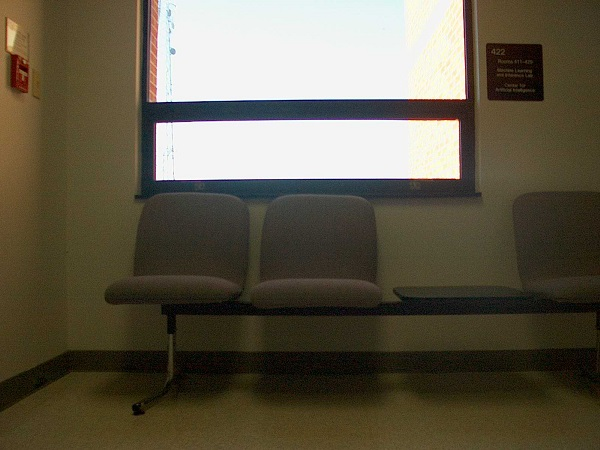
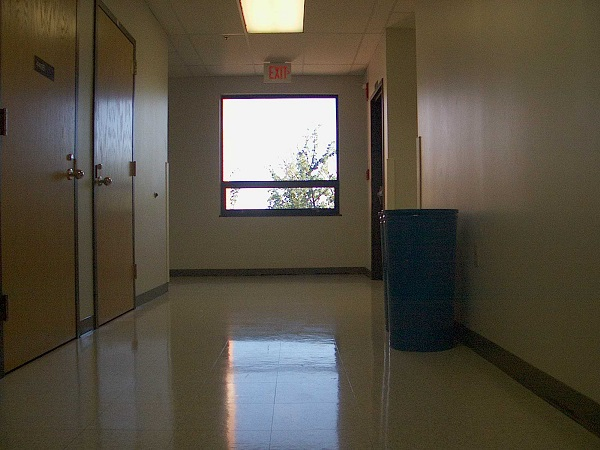
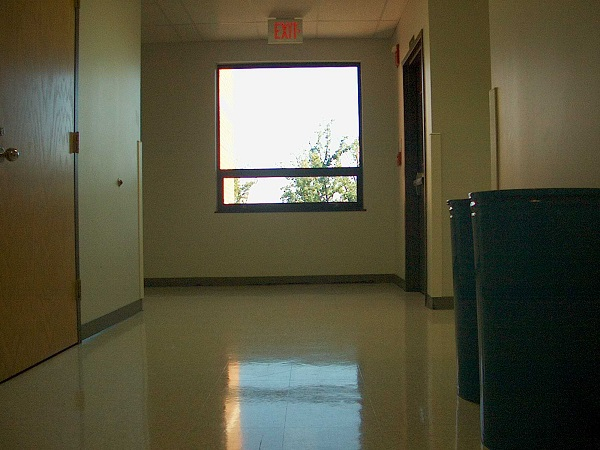
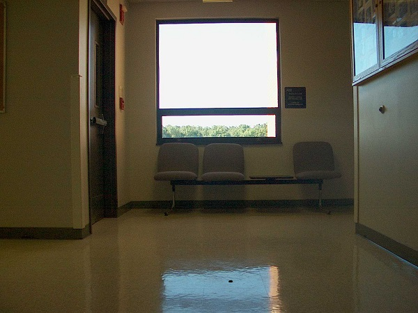

CS482_Projects
Homework 2 Hough Line Transform
Hough Transform
In this assignment, we are going to use Hough transform apply to the images. The purple of the Hough transform is used to isolate feature of the particale shape of the images.
we use Standard Hough Transform and Probabilistic to dectect the lines of the images.
We have choose 5 differnets images to use those two function to detect lines of each images.
Each image may have a different parameter value in order to find the correct edge and lines of the images.
Before apply Hough line function, we need to use canny edge to detect edge of the image, then use the Hough transform feature with the differnt threshold.
There is differnt between standar hough transform line and probabilistic hough transform. The standard hough tranfrom function has 4 parameter arguments, the fouth argument is thershold which mean minimum vote that should get to be considerd as a line. Probabilistic hough transform didn't take all the points, it takes a random subset of the points for the lines detection.as same as standard hough but probabilistc hough has two more
parameter which are mininum length of the line and maxium allowed gap between line segments . It will directly return two endpoints of the line instead of standard hough, we need to find all the points. Probabilitis is more easiy and smiple ways to detect lines of the images.
The first image
This images have been reduced the size. Each image has applied with different parameter values.

Canny edges
In this image I used the canny edge function with two thresholds (upper and lower) (55,95)

Covert to gray code

Standard Hough Transform Line. I applied the houghline function with the 4th parameter threshold = 50

Probabilistic Hough Transform Line.
Applied with the Probalbilitic function .
minLineLength =100, maxLineGap = 5
lines = cv2.HoughLinesP(edges,1,np.pi/180,10,minLineLength,maxLineGap)

The second image

Canny edges function with two upper and lower threshold ( 45,100)

Covert to gray code

Standard Hough Transform Line. For this images i need to reduce the value of threshold to 10

Probabilistic Hough Transform Line. I changed the value of minLinelight = 400 and maxLineGap = 5

The thrid image

Canny edges with threshold (50, 100)

Covert to gray code

Standard Hough Transform Line. The line threshold for this images also set it to 10

Probabilistic Hough Transform Line. I slightly changed the minLinelength = 100 and keep the maxLineGap the same.

The fouth image

Canny edges. The threshold of the cany edge has been changed to (50,100)

Covert to gray code

Standard Hough Transform Line.

Probabilistic Hough Transform Line. With the thresholf = 10 , minLineLength = 100,maxLineGap = 5 , the lines of the image has been detected effectively.

The fith image

Canny edges
edges = cv2.Canny(gray,100,250)

Covert to gray code

Standard Hough Transform Line

Probabilistic Hough Transform Line. The threshod has been changed to 50, and minLineLength = 200
maxLineGap = 5. Unless the lines of the images are not showed.